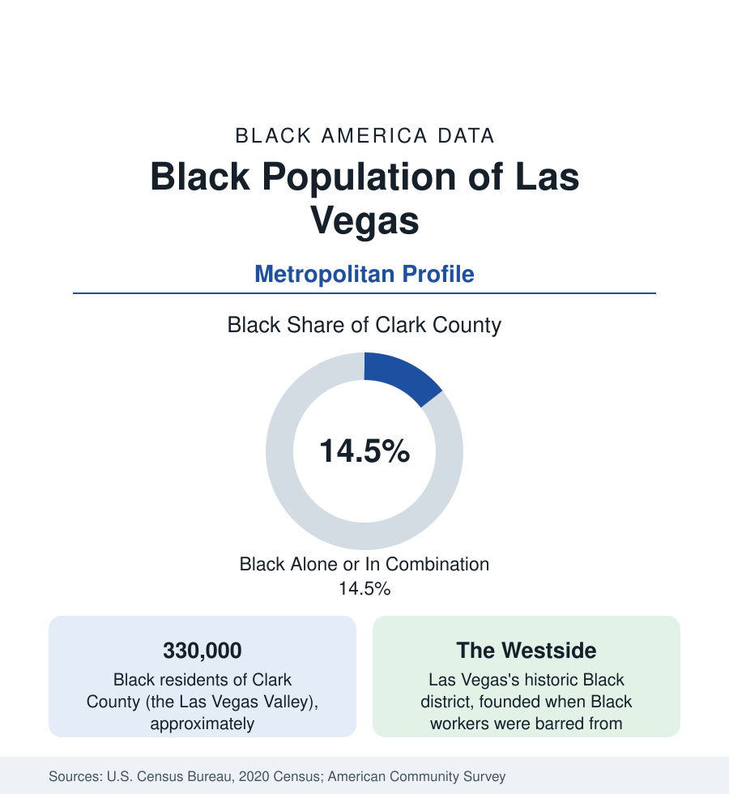

Black Cities
Black Las Vegas: The Westside and the Valley's Growth
Las Vegas and Clark County hold about 330,000 Black residents — from the Historic Westside to the fastest-growing suburbs in Nevada. The census profile.

The Las Vegas Valley — Clark County — holds about 330,000 Black residents, roughly one in seven of its 2.3 million people, the large majority of Black Nevada. The community's geography runs from the Historic Westside, the district where Black Las Vegas was confined in the casino economy's segregated decades, to the master-planned suburbs where its growth now concentrates. This article profiles the population in the census data.
The Historic Westside
Black Las Vegas begins with the railroad and swells with the war industries and the casinos — and was required, in the city's segregated era, to live west of the tracks. The Westside (the Historic Westside of the modern maps) built a complete community under that constraint: Jackson Street's clubs and businesses formed the district the era called the Black Strip, where the performers who headlined the Strip's showrooms — and could not stay in its hotels — lived and played after hours. The Moulin Rouge, opened in 1955 as the city's first integrated casino-hotel on the Westside's edge, marks the era in the record. The district's modern data carry the constraint's long tail: the Westside's tracts record the Valley's most difficult Black indicators — income, health access, housing condition — against a metro whose Black medians run far stronger, and the city's recent reinvestment programs are tracked against those tracts.
The Valley's Dispersal
The modern Black population is a Valley population. North Las Vegas, the independent city north of the core, is roughly a fifth Black — one of the largest Black suburban cities in the West — with deep homeowner districts from the 1970s onward. Henderson, the southeast giant, records a growing Black population in the high single digits. The unincorporated county townships — Spring Valley, Paradise, Sunrise Manor, Whitney — hold large communities across the Valley floor, and the northwest's new master plans (Providence, Skye Canyon, Centennial Hills) draw the newest arrivals. The distribution resembles Phoenix's in kind — suburban, dispersed, automobile-scaled — at a higher Black share and with a service-economy workforce underneath it.
The Casino Economy's Workforce
Employment in Black Las Vegas runs through the hospitality economy that employs the Valley generally — the resorts' culinary, housekeeping, security, and entertainment workforces, substantially unionized on the Culinary Workers' model, which the labor data record as among the strongest private-sector wage floors for service work in the nation — and through the public sector, health care, logistics (the Valley is a distribution node for the whole Southwest), and Nellis Air Force Base's military economy. The COVID shock registered in this metro's data more violently than in any other profile in this section — the tourism collapse produced the nation's highest metro unemployment at its trough — and the recovery series since is the Valley's standing economic exhibit.
Composition and Change
The community's composition mirrors the Valley's: California-born newcomers are the largest stream in the birthplace data, followed by the Midwest and South; African immigrant communities (Ethiopian above all) and Caribbean populations layer in; and the age structure is young against a retiree stream that gives the Valley a growing Black senior population as well. Nevada's Black growth rate ranks with Arizona's at the top of the state table — the two desert metros are, demographically, one phenomenon split by a state line — and the estimates project the Valley's Black population toward a fifth of the county within the planning horizon of its own demographers.
Reading the Las Vegas Numbers
Las Vegas completes the desert pair with Phoenix: a Black population built by an entertainment economy's labor demand, confined in its founding geography, dispersed in its growth. The Westside's data and the suburbs' data are both the profile; the distance between them — a few miles of freeway — is the distance this section exists to measure.
The institutions are catching the growth: UNLV's Black enrollment is the state's largest, the College of Southern Nevada carries the broad base, Black churches anchor every Valley quadrant, and a Black business and media layer (the Nevada Black Chamber's orbit, Black-published media serving the Valley) has grown with the population it serves. The education data add the standing caveat: the Clark County district, among the nation's largest, records Black student outcomes in the pattern of the other big urban systems in this section — the community's central policy file.
More in Black Cities
Black Atlanta: Population, Distribution, and Growth of a Black Metropolis
Metro Atlanta holds more than two million Black residents — roughly one in three, second only to New York. The suburban distribution, migration history, and composition of Black Atlanta in the census data.
Black New York: The Largest Black Population in America
The New York metropolitan area holds about 3.4 million Black residents — more than any metro in the nation — and the city itself about two million. The census profile.
Black Washington: The District and the Metro
The Washington metro holds about 1.6 million Black residents, and the District itself — long a majority-Black city — now records a Black share near 41 percent. The census profile.
Source: U.S. Census Bureau, 2020 Census; American Community Survey; Population Estimates Program.